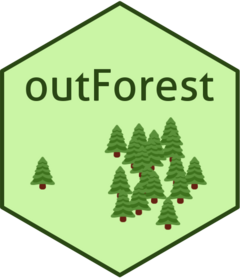

{outForest} 
Overview
{outForest} is a multivariate anomaly detection method. Each numeric variable is regressed onto all other variables using a random forest. If the scaled absolute difference between observed value and out-of-bag prediction is larger than a prespecified threshold, then a value is considered an outlier. After identification of outliers, they can be replaced, e.g., by predictive mean matching from the non-outliers.
The method can be viewed as a multivariate extension of a basic univariate outlier detection method, in which a value is considered an outlier if it deviates from the mean by more than, say, three times the standard deviation. In the multivariate case, instead of comparing a value with the overall mean, rather the difference to the conditional mean is considered. {outForest} estimates this conditional mean by a random forest.
Once the method is trained on a reference data set, it can be applied to new data.
Installation
# From CRAN
install.packages("outForest")
# Development version
devtools::install_github("mayer79/outForest")Usage
We first generate a data set with about 2% outliers values in each numeric column. Then, we try to identify them.
library(outForest)
set.seed(3)
# Generate data with outliers in numeric columns
head(irisWithOutliers <- generateOutliers(iris, p = 0.02))
# Sepal.Length Sepal.Width Petal.Length Petal.Width Species
# 5.1 3.500000 1.4 0.2 setosa
# 4.9 3.000000 1.4 0.2 setosa
# 4.7 3.200000 1.3 0.2 setosa
# 4.6 3.100000 1.5 0.2 setosa
# 5.0 -3.744405 1.4 0.2 setosa
# 5.4 3.900000 1.7 0.4 setosa
# Find outliers by random forest regressions and replace them by predictive mean matching
(out <- outForest(irisWithOutliers, allow_predictions = TRUE))
# Plot the number of outliers per numeric variable
plot(out)
# Information on outliers
head(outliers(out))
# row col observed predicted rmse score threshold replacement
# 5 Sepal.Width -3.744405 3.298493 0.7810172 -9.017596 3 2.8
# 20 Sepal.Length 10.164017 5.141093 0.6750468 7.440852 3 5.4
# 138 Petal.Width 4.721186 2.113464 0.3712539 7.024092 3 2.1
# 68 Petal.Width -1.188913 1.305339 0.3712539 -6.718452 3 1.2
# 137 Sepal.Width 8.054524 2.861445 0.7810172 6.649122 3 2.9
# 15 Petal.Length 6.885277 1.875646 0.7767877 6.449163 3 1.3
# Resulting data set with replaced outliers
head(Data(out))
# Sepal.Length Sepal.Width Petal.Length Petal.Width Species
# 5.1 3.5 1.4 0.2 setosa
# 4.9 3.0 1.4 0.2 setosa
# 4.7 3.2 1.3 0.2 setosa
# 4.6 3.1 1.5 0.2 setosa
# 5.0 2.8 1.4 0.2 setosa
# 5.4 3.9 1.7 0.4 setosa
# Out-of-sample application
iris1 <- iris[1, ]
iris1$Sepal.Length <- -1
pred <- predict(out, newdata = iris1)
# Did we find the outlier?
outliers(pred)
# row col observed predicted rmse score threshold replacement
# 1 Sepal.Length -1 4.960069 0.6750468 -8.82912 3 6.4
# Fixed data
Data(pred)
# Sepal.Length Sepal.Width Petal.Length Petal.Width Species
# 6.4 3.5 1.4 0.2 setosa